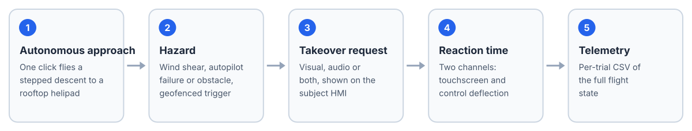

Overview
This is a research platform for studying pilot takeover from an autonomous eVTOL, built on Microsoft Flight Simulator 2024 and its AICtrl DevKit REST API. The aircraft flies an autonomous stepped approach to a rooftop helipad. At a scripted point a hazard is triggered (wind shear, autopilot failure or an obstacle), and a multimodal takeover HMI (visual, audio or both) asks the participant to take over while the system records reaction time and full telemetry.
Everything is plain Python standard library (3.8 or newer, nothing to install) and talks to the DevKit over HTTP. The repository also contains a colleague's parallel implementation of the three scenarios.
How a Trial Runs

One trial, from autonomous approach to logged takeover.
- Human-style control. The aircraft is flown only through the real pilot inputs, throttle for fore and aft and elevator for up and down, never by writing attitude or position.
- Operator panel and subject HMI are served by one small HTTP server, at
:8000/and:8000/hmi. - One-click approach. “AP on” flies a smooth stepped descent and, when a hazard is armed, routes through its trigger zone so the scenario fires on its own.
- Three hazards with geofenced triggers (radius and altitude band), reaction time on two channels, and a telemetry CSV per trial.
- Remote deployment pushes and runs the controller on the simulator PC over SSH.
What We Measured on This Airframe
| Control | Effect, measured live |
|---|---|
DevKit /get | 76 variables, 41 of them writable |
| Throttle lever 1 | Fore and aft, not altitude; terminal ground speed about 5 m/s |
| Elevator | Vertical: about 10 ft/s of climb or descent per unit |
| Collective, cyclic | Not exposed; VELOCITY_BODY_X writes do not stick in flight |
| Attitude and controls | Heading, bank, throttle, elevator and rudder writes do stick |
At the scenario start the nose points about 0.3° while the helipad bears about 20°, and throttle thrust acts about 19° right of the nose. The two cancel, so simply pushing the throttle tracks straight to the pad with no heading input.
Simulation research software only, not for real flight. Recruitment, participant and questionnaire files with personal information are excluded from the repository.